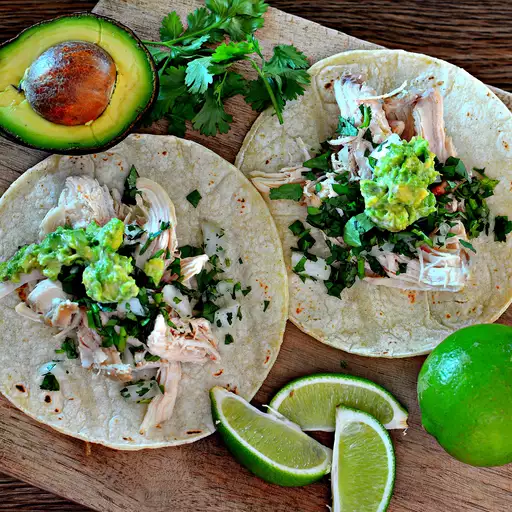

Tacos

Quick and easy to make street style chicken tacos. Packed with flavour and look great!
Ingredients
- 6 corn tortillas
- 3 cups chopped cooked chicken
- 4 sprigs fresh cilantro
- 1/2 cup chopped white onion
- 1 cup guacamole
- 1 lime, cut into wedges
Steps
- Place a paper towel on a microwave-safe plate and top with tortillas; heat in the microwave for 10 seconds.
- Place chicken in a microwave-safe bowl; heat in the microwave until heated through, 30 seconds to 1 minute.
- Layer chicken, cilantro, onion, and guacamole, in that order, onto each tortilla. Squeeze lime juice over each taco.